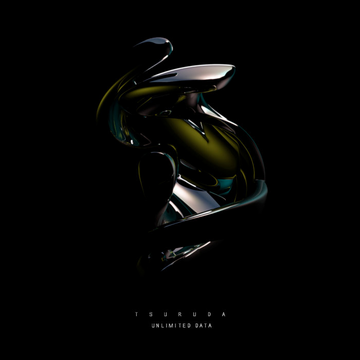

DARKER EDM
This is the guide of some of the more brutal EDM sub genre examples. Below you will find five select genres, an example linked with Spotify, an explanation of the characteristics of each displayed genre, and an image of the song example
Genre Examples
Trap

Trap is characterized by its off the grid use of 808's and snares, as well as applying the use of short pauses in its tempo
Speedcore

Speedcore is charcterized by its absurdly fast tempo, use of sporadic hardcore kicks, glitchy experimental fills, and it also boasts the use of hypersaws over the mix
Dubstep

Graphyt & Ecraze - Mechanoid Doom
Dubstep is characterized by its gritty and heavily modulated bass synths, loud sub bass, 140-160 BPM tempo, and versatility
Hardcore

Sub Zero Project - Enter The Realm
Hardcore is characterized by the determined use of hardstyle kicks accompanied by hypersaw melodies layered above the mix, and is usually very repetitive
Deep Dub
Deep Dub is characterized by its heavy use of creative sub bass paired with the calmer nature of its mood, and tends to be more experimental
Deathstep

Deathstep is characterized by its gritty and highly distorted basses usually accompanied by choir, metal, or dark ambience, and touts sinister themes